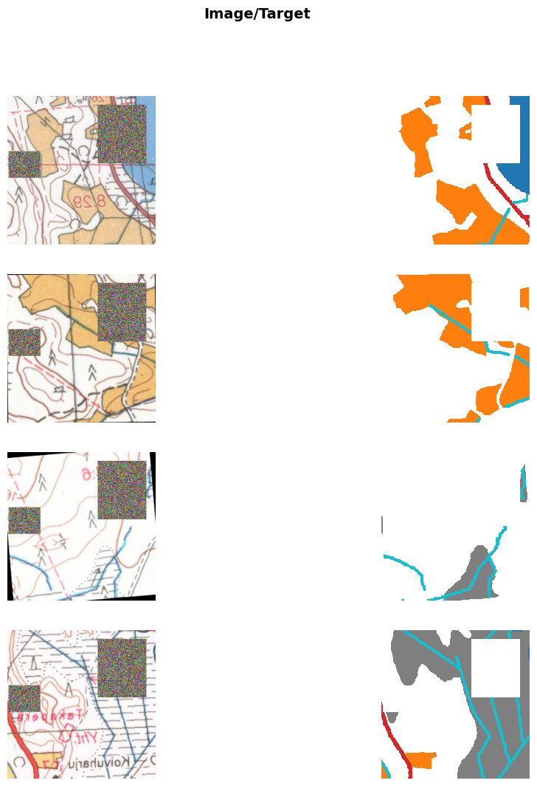
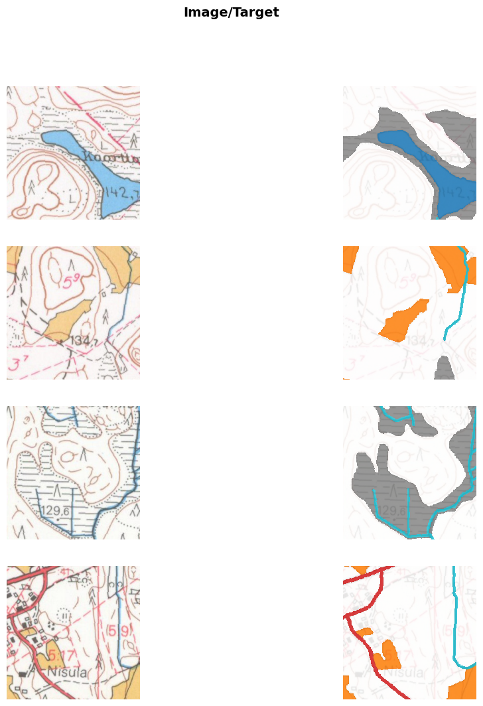
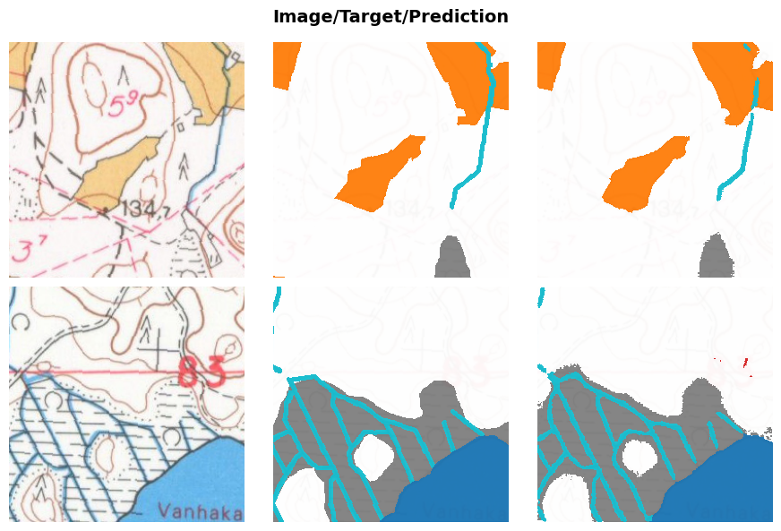

from pathlib import Path
import os
from fastai.vision.all import *
from fastai.callback.wandb import *
from fastai.callback.progress import ShowGraphCallback
from fastai.callback.tracker import SaveModelCallback
from drone_detector.engines.fastai.data import *
from drone_detector.metrics import JaccardCoeffMulti
import wandb
sys.path.append('..')
from src.dataloaders import SegmentationDataLoadersFix
from src.augmentations import RandomErasingSegTrain model
1 Model training
Specify which patch locations are used for validation.
outpath = Path('../data/processed/train')
patches = sorted(os.listdir(outpath/'1984'/'raster_tiles'))
val_files = patches[int(len(patches)*.75):]
fnames = [Path(outpath/year/'raster_tiles'/f) for year in ['1965', '1984']
for f in os.listdir(outpath/year/'raster_tiles')]Locations are the same for both years in order to prevent data leakage.
import rasterio as rio
import rasterio.merge as rio_merge
import rasterio.plot as rioplot
rasters = []
fig, ax = plt.subplots(1,4, figsize=(12,4))
for a in ax: a.axis('off')
rasters = []
for f in [s for s in patches if s not in val_files]:
src = rio.open(outpath/'1965/raster_tiles'/f)
rasters.append(src)
mos, tfm = rio_merge.merge(rasters)
ax[0].imshow(np.moveaxis(mos,0,2))
ax[0].set_title('1965 training area')
rasters = []
for f in val_files:
src = rio.open(outpath/'1965/raster_tiles'/f)
rasters.append(src)
mos, tfm = rio_merge.merge(rasters)
ax[1].imshow(np.moveaxis(mos,0,2))
ax[1].set_title('1965 validation area')
rasters = []
for f in [s for s in patches if s not in val_files]:
src = rio.open(outpath/'1984/raster_tiles'/f)
rasters.append(src)
mos, tfm = rio_merge.merge(rasters)
ax[2].imshow(np.moveaxis(mos,0,2))
ax[2].set_title('1984 training area')
rasters = []
for f in val_files:
src = rio.open(outpath/'1984/raster_tiles'/f)
rasters.append(src)
mos, tfm = rio_merge.merge(rasters)
ax[3].imshow(np.moveaxis(mos,0,2))
ax[3].set_title('1984 validation area')
plt.tight_layout()
plt.show()We need to slighly modify fastai’s SegmentationDataLoaders so that we can specify the tiles to use as validation data during training, as well as edit RandomErasing so that it also erases the masks. These can be found in src folder.
The models are trained using fastai library. During training, the images are randomly flipped horizontally, brightness and contrast and saturation are randomly adjusted, images are rotated randomly (maximum rotation 5 degrees) and random areas are erased from the images.
dls = SegmentationDataLoadersFix.from_label_func('../data/', bs=8,
codes = ['Background',
'Fields',
'Mires',
'Roads',
'Watercourses',
'Water bodies'],
fnames=fnames,
label_func=(partial(label_from_different_folder,
original_folder='raster_tiles',
new_folder='mask_tiles')),
batch_tfms = [
*aug_transforms(max_rotate=5.,
max_warp=0.,
max_zoom=1,
pad_mode='zeros',
xtra_tfms=[
Saturation(max_lighting=0.3)]),
RandomErasingSeg(max_count=2, erasing_mode='gaussian'),
Normalize.from_stats(*imagenet_stats)
],
num_workers=0, val_fnames=val_files)from matplotlib import colors
cmap = colors.ListedColormap(['white', 'tab:orange', 'tab:grey', 'tab:red', 'tab:cyan', 'tab:blue'])
bounds=[0,1,2,3,4,5]
dls.show_batch(max_n=8, cmap=cmap, alpha=1, vmin=0, vmax=5)
We used U-Net (Roenneberger, Fischer and Brox, 2015) architecture with ResNet152 as the encoder and Focal Loss as the loss function. The model evaluation metrics are Dice and Jaccard coefficients for multiclass tasks. Dice coefficient is twice the area of overlap in pixels divided by the total number of pixels in the images, while Jaccard coefficient is the area of intersection divided by the area of union. Both metrics are computed for each class separately, and then averaged, excluding background class.
learn = unet_learner(dls, arch=resnet152, pretrained=True, n_in=3, n_out=6, blur=False, self_attention=False,
metrics=[DiceMulti(), JaccardCoeffMulti()], loss_func=FocalLossFlat(axis=1)).to_fp16()learn.lr_find()SuggestedLRs(valley=1.737800812406931e-05)Track the training with wandb.
wandb.init(project='historical-maps')As the task is fairly simple, we trained the model for 1 frozen epochs (only the classification layer and decoder), and 10 unfrozen epochs (all layers unfrozen).
learn.fine_tune(10, freeze_epochs=1, base_lr=1e-4, cbs=[ShowGraphCallback, WandbCallback(log_preds_every_epoch=True)])| epoch | train_loss | valid_loss | dice_multi | jaccard_coeff_multi | time |
|---|---|---|---|---|---|
| 0 | 0.366200 | 0.135884 | 0.579627 | 0.462131 | 00:48 |
| epoch | train_loss | valid_loss | dice_multi | jaccard_coeff_multi | time |
|---|---|---|---|---|---|
| 0 | 0.096456 | 0.061018 | 0.827349 | 0.696469 | 00:44 |
| 1 | 0.078594 | 0.105482 | 0.760327 | 0.599985 | 00:44 |
| 2 | 0.065460 | 0.035690 | 0.883655 | 0.777175 | 00:44 |
| 3 | 0.051111 | 0.033925 | 0.881897 | 0.776236 | 00:44 |
| 4 | 0.042035 | 0.035209 | 0.891968 | 0.791245 | 00:44 |
| 5 | 0.035553 | 0.025388 | 0.910085 | 0.820936 | 00:44 |
| 6 | 0.031272 | 0.031957 | 0.895384 | 0.796915 | 00:44 |
| 7 | 0.028636 | 0.024199 | 0.910118 | 0.821767 | 00:44 |
| 8 | 0.027473 | 0.023532 | 0.914583 | 0.828892 | 00:44 |
| 9 | 0.025727 | 0.023381 | 0.914946 | 0.829465 | 00:44 |
learn.to_fp32()
wandb.finish()learn.show_results(max_n=8, cmap=cmap, alpha=0.8, vmin=0, vmax=5)learn.validate()(#3) [0.023381350561976433,0.9149572189762392,0.8294852675339317]learn.path = Path('../models')
learn.export(fname='resnet152_focal_cutmasks.pkl')2 Test with remaining labeled data
2.1 Example result patches
learn = load_learner('../models/resnet152_focal_cutmasks.pkl', cpu=False)
learn.dls = dlsvalid_im_path = Path('../data/processed/val/')
val_images = [Path(valid_im_path/year/'raster_tiles'/f) for year in ['1965', '1984']
for f in os.listdir(valid_im_path/year/'raster_tiles')]testdl = learn.dls.test_dl(val_images, with_labels=True, bs=32, shuffle=True)testdl.show_batch(max_n=8, cmap=cmap, alpha=0.8, vmin=0, vmax=5)
Check the loss, dice score and jaccard score for this dataset.
learn.validate(dl=testdl)(#3) [0.029747433960437775,0.9198446067228588,0.8382089817195901]And then some example results.
learn.show_results(dl=testdl, max_n=2, cmap=cmap, alpha=.95)
f = plt.gcf()
norm = colors.Normalize(vmin=0,vmax=6)
sm = plt.cm.ScalarMappable(cmap=cmap, norm=norm)
#cbar = fig.colorbar(sm, ax=f.axes, ticks=np.arange(0.5,6.5), aspect=75)
#cbar.ax.set_yticklabels(['Background', 'Fields', 'Mires', 'Roads', 'Watercourses', 'Water bodies'])
plt.savefig('../data/figures/poster_preds.png', dpi=300, bbox_inches='tight')
plt.tight_layout()
2.2 Classwise metrics
These results are before any morphological post-processings, and before merging the results into large tiles.
from sklearn.metrics import precision_score, recall_score
def dice(targs, preds, cls_id):
inter = (torch.where(targs==cls_id, 1, 0)*torch.where(preds==cls_id, 1, 0)).float().sum()
union = (torch.where(targs==cls_id, 1, 0)+torch.where(preds==cls_id, 1, 0)).float().sum()
return 2 * inter/union if union > 0 else None
def jaccard(targs, preds, cls_id):
inter = (torch.where(targs==cls_id, 1, 0)*torch.where(preds==cls_id, 1, 0)).float().sum()
union = (torch.where(targs==cls_id, 1, 0)+torch.where(preds==cls_id, 1, 0)).float().sum()
return inter/(union-inter) if union > 0 else None
def pre(targs, preds, cls_id):
return precision_score(torch.where(targs==cls_id, 1, 0).flatten(), torch.where(preds==cls_id, 1, 0).flatten())
def rec(targs, preds, cls_id):
return recall_score(torch.where(targs==cls_id, 1, 0).flatten(), torch.where(preds==cls_id, 1, 0).flatten())2.2.1 Validation set
_,targs, preds = learn.get_preds(with_decoded=True)2.2.1.1 Fields
Dice score for fields:
dice(targs, preds, 1)TensorBase(0.9731)Jaccard score for fields:
jaccard(targs, preds, 1)TensorBase(0.9477)Precision for fields:
pre(targs, preds, 1)0.972258257302713Recall for fields:
rec(targs, preds, 1)0.97403989343359912.2.1.2 Mires
Dice score for mires:
dice(targs, preds, 2)TensorBase(0.8912)Jaccard score for mires:
jaccard(targs, preds, 2)TensorBase(0.8037)Precision for mires:
pre(targs, preds,2)0.884052339005425Recall for mires:
rec(targs, preds, 2)0.89844128794553082.2.1.3 Roads
Dice score for roads:
dice(targs, preds, 3)TensorBase(0.8770)Jaccard score for roads:
jaccard(targs, preds, 3)TensorBase(0.7809)Precision for roads:
pre(targs, preds, 3)0.8530348089242903Recall for mires:
rec(targs, preds, 3)0.902317008952082.2.1.4 Watercourses
Dice score for watercourses:
dice(targs, preds, 4)TensorBase(0.7721)Jaccard score for watercourses:
jaccard(targs, preds, 4)TensorBase(0.6288)Precision for watercourses:
pre(targs, preds, 4)0.7471939707544204Recall for watercourses
rec(targs, preds, 4)0.79876378929010982.2.1.5 Water bodies
Dice score for water bodies:
dice(targs, preds, 5)TensorBase(0.9931)Jaccard score for water bodies:
jaccard(targs, preds, 5)TensorBase(0.9863)Precision for water bodies
pre(targs, preds, 5)0.9910614109293016Recall for water bodies:
rec(targs, preds, 5)0.99510296616998242.2.2 Test set
_, targs, preds = learn.get_preds(dl=testdl, with_decoded=True)2.2.2.1 Fields
Dice score for fields:
dice(targs, preds, 1)TensorBase(0.9697)Jaccard score for fields:
jaccard(targs, preds, 1)TensorBase(0.9412)Precision for fields:
pre(targs, preds, 1)0.9618274055387686Recall for fields:
rec(targs, preds, 1)0.97776849461991272.2.2.2 Mires
Dice score for mires:
dice(targs, preds, 2)TensorBase(0.8981)Jaccard score for mires:
jaccard(targs, preds, 2)TensorBase(0.8151)Precision for mires:
pre(targs, preds,2)0.8723801784942353Recall for mires:
rec(targs, preds, 2)0.92547022826141222.2.2.3 Roads
Dice score for roads:
dice(targs, preds, 3)TensorBase(0.8816)Jaccard score for roads:
jaccard(targs, preds, 3)TensorBase(0.7882)Precision for roads:
pre(targs, preds, 3)0.8464330652120925Recall for mires:
rec(targs, preds, 3)0.91978724470438322.2.2.4 Watercourses
Dice score for watercourses:
dice(targs, preds, 4)TensorBase(0.8009)Jaccard score for watercourses:
jaccard(targs, preds, 4)TensorBase(0.6679)Precision for watercourses:
pre(targs, preds, 4)0.783207010142257Recall for watercourses
rec(targs, preds, 4)0.81932765210399752.2.2.5 Water bodies
Dice score for water bodies:
dice(targs, preds, 5)TensorBase(0.9892)Jaccard score for water bodies:
jaccard(targs, preds, 5)TensorBase(0.9786)Precision for water bodies
pre(targs, preds, 5)0.9865743571649199Recall for water bodies:
rec(targs, preds, 5)0.9917838442196202